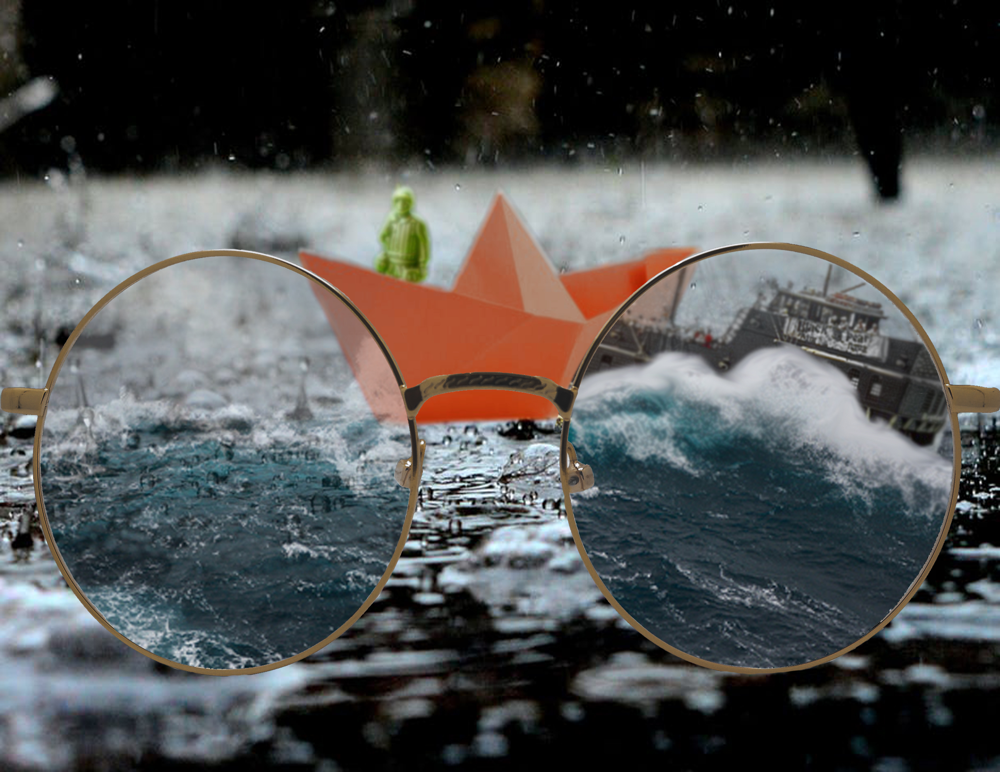
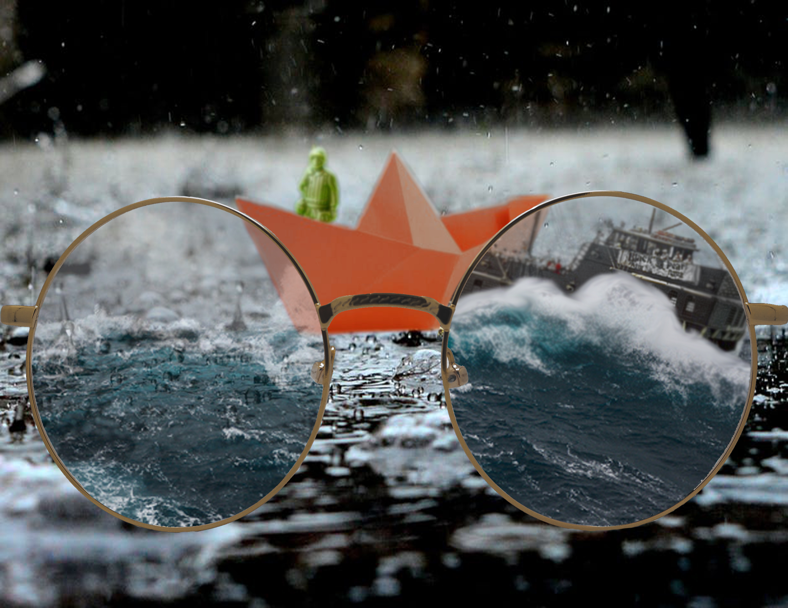

• For my remix project, I decided to imitate the imagination of a child versus the imagination of an adult. On the right side of the glasses, you see the paper boat as a big ship with massive waves. However on the left side, you see the paper boat for what it is. My inspiration came from seeing the imagination of my nieces when they play. My project was done through Adobe Photoshop. I used blurred the images of the paper boat and the army man to give the illusion that they are out of focus, then I also added the glasses and decreased the opacity of the ocean in the lenses while adding a ship to one of the lenses.
Press Start to Return Home